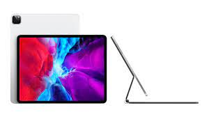

The iPad Pro is a premium professional sub-lineup of the iPad tablet computers by Apple Inc. It runs iPadOS, an optimized derivation from the predecessor iOS. The original iPad Pro, introduced in September 2015, was originally based on iOS 9. The second generation, unveiled in June 2017, made use of an upgraded A10X Fusion chip with an extended 10.5-inch screen display. The home button was eliminated following the third lineup (October 2018) for a full display at 11-inch, and it features an array sensor Face ID capable of performing unlocking at wide angles. The fourth lineup, introduced in March 2020, included the A12Z chip with added compatibility to the Magic Keyboard. The fifth generation was announced in April 2021, incorporating a desktop-class SoC Apple silicon M1 chip, marking the first model to not use an A-series processor. The sixth and current generation, introduced in October 2022, included the M2 chip, Apple Pencil Hover, and ProRes video.
The first generation of iPad Pro came in two sizes: 12.9-inch and 9.7-inch. The 12.9-inch version was announced on September 9, 2015[12] and released on November 11, 2015.[13] It is larger than all previous iPad models, was the first iPad to feature LPDDR4 RAM,[1] and originally shipped with iOS 9.1. The 9.7-inch iPad Pro was announced on March 21, 2016 and released on March 31 that same year.[14] It was based on the form factor of the iPad Air 2 and originally shipped with iOS 9.3.
The Magic Keyboard features the first trackpad designed for an iPad, a hinge to adjust the viewing angle and includes a USB-C port for pass-through charging.[17] The Magic Keyboard is supported by all iPad Pro devices introduced since 2018. Though initially expected to launch in May 2020, orders shipped starting in late April 2020.[37] The Magic Keyboard was met with mixed reviews. While providing many features which users wanted, there were some downsides to it. The Magic Keyboard provided a proper typing experience and supplied a good trackpad bundled with excellent build quality. On the downside, the added weight to the iPad Pro for this functionality, a missing function key row and a steep price, made the Magic Keyboard an accessory only for a niche market.[38] With the launch of 5th generation of iPad Pro on 20 April 2021, a white color has also been added to the Apple Store.
The first generation of the high-end and professional flagship iPad Pro was announced on September 9, 2015, and released on November 11, (12.9-inch version) and March 31 (9.7-inch).It used an Apple A9X chip, with a 2x higher memory bandwidth and a 1.8x faster CPU than its predecessor. It audio system consisted of 4 audio ports and its volume were more 3x more efficient than the second generation of iPad Air, and its 12-inch screen display had a resolution of 2732 by 2043 pixels.[55][56] The second generation of iPad Pro was announced on June 5, 2017, and was released on June 13. It used an Apple A10X chip, with a 6-core CPU and 12-core GPU. It can process 120 Hz HDR quality medias, 2x higher quality than its predecessor. Its ultra-low reflective Retina Display featured a 50% optimized True Tone technology (which automatically adjust the screen accordingly to its ambient color and brightness rates), Wide Color Integration, and up to 500 nit brightness rates. It also had a 12-megapixel rear-facing camera and a 7-megapixel front-facing camera.[57] The third generation of iPad Pro was announced on October 30, 2018, and released on November 7, and it is the first iPad to support 1 TB of storage. It used a 7 nm Apple A12X Bionic chip, which comprised 11 billion transistors, an 8-core CPU, 7-core GPU and an embedded Neural Engine capable of processing 5 trillion operations per second. Apple replaced the Touch ID fingerprint recognition biometric authentication with its facial counterpart, Face ID.[58] The fourth generation of iPad Pro was announced and released on March 18, 2020. It used an Apple A12Z chip, with an 8-core CPU and 8-core GPU. Its Gibt-class Wi-Fi connectivity is 60% faster than that of its predecessor. It introduced a 10-megapixel ultra-wide camera, alongside its 12-megapixel wide camera, capable of capturing 4k video. These cameras allow it to capture medias with wider visibility, and its audio system automatically detects and attracts any orientation nearby.[58] The fifth generation of iPad Pro was April 20, 2021 and released on May 21. It used an innovative desktop-class Apple M1 chip, which comprised a 40% faster 8-core CPU, a 4x faster 8-core GPU, and a 4x higher bandwidth. It featured a ƒ/1.8 aperture 12-megapixel wide-angle pro camera (captures high quality shots) and a ƒ/2.4 aperture 10-megapixel ultrawide camera (captures enhanced Augmented Reality interactive experience). It debuted Apple's "Center Stage mode" technology, which pinpoints the positions of the users and automatically tracks the camera view accordingly to perspectivally centralize them. The 12.9-inch version had a mini LED-based Liquid Retina XDR display, compared to the 11-inch model's lesser IPS LCD-based Liquid Retina display.[5